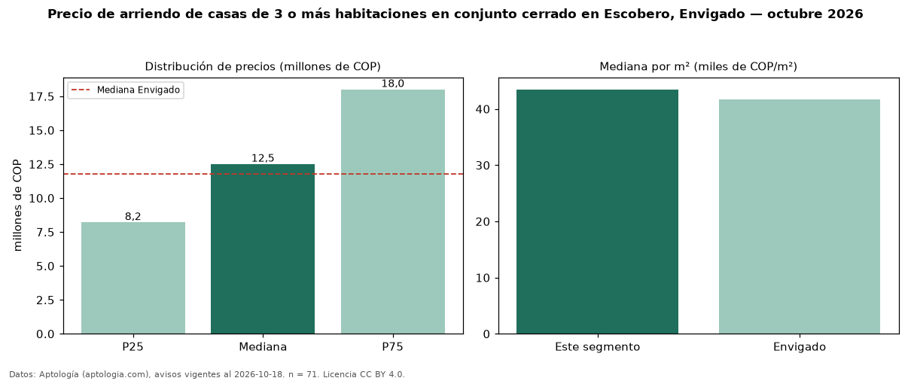

Precio de arriendo de casas de 3 o más habitaciones en conjunto cerrado en Escobero, Envigado — octubre 2026
COP 12,50 millones al mes es el canon mediano de casas de 3 o más habitaciones en conjunto cerrado en arriendo en Escobero, Envigado (n = 71 avisos). Eso es 4 % menos que la mediana de las casas de 3 o más habitaciones en arriendo de Escobero (COP 13 millones, n = 86); este segmento reúne el 83 % de esos avisos. Por metro cuadrado, la mediana es COP 43.469/m² al mes (n = 70), 2 % por encima de las casas de 3 o más habitaciones en arriendo de Escobero (COP 42.544/m²). El área mediana anunciada es 285 m². La mitad central de los avisos va de COP 8,20 millones a COP 18 millones (razón 2,2), una dispersión alta. El estrato más frecuente es 5 (69 % de los avisos con estrato). La mediana de todas las casas en arriendo de Envigado es COP 11,80 millones (+6 % de diferencia). Datos: Aptología (aptologia.com), CC BY 4.0 — https://www.aptologia.com/casas-en-arriendo/envigado/escobero. Archivos: PDF, CSV con las cifras y gráfica PNG.

| Avisos únicos | 71 |
|---|---|
| Percentil 25 | COP 8.200.000 |
| Mediana | COP 12.500.000 |
| Percentil 75 | COP 18.000.000 |
| Mediana por m² | COP 43.468 |
Fuente: avisos vigentes de portales inmobiliarios recopilados por Aptología, deduplicados (mínimo 30 avisos únicos por celda). Precios pedidos, no cerrados. Fecha: 2026-10-18.